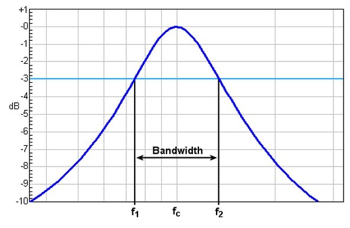
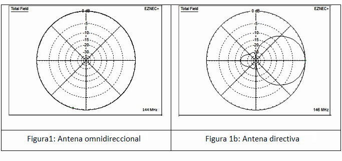
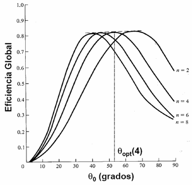
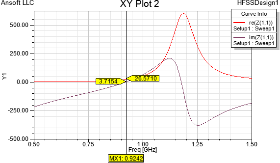
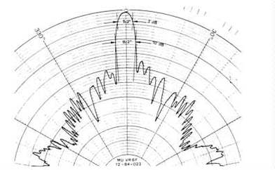
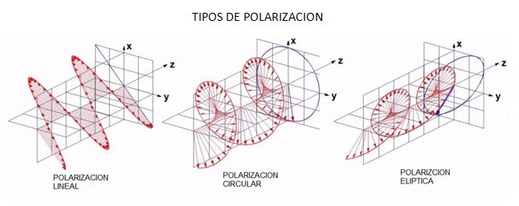
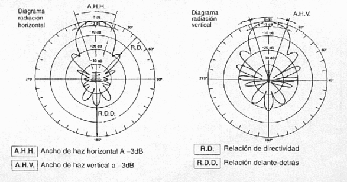
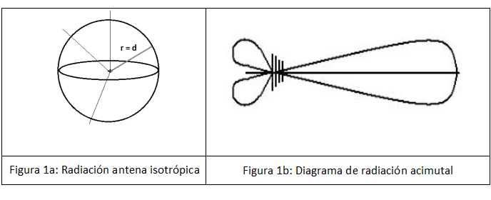

Antenas
¿Que son?
Las antenas son dispositivos que emiten o reciben ondas electromagnéticas lo cuál hace posible la conexión inalámbrica.
¿Como funciona?
Existen muchos tipos de antenas pero se suelen diferenciar por lo siguiente:
Ancho de banda
Es la potencia que tiene la antena en términos de impedancia, polarización, ganancia u otros parámetros.

Directividad
Es la la capacidad que tiene para concentrar la radiación o recepción en una dirección concreta
Ganancia
La ganacia de potencia en la dirección máxima de radiación. Se mide en dBd o dBi.

Eficiencia
Es la relación entre la potencia radiada y la que es entregada a la antena.

Impedancia de entrada
La relación entre la tensión y la corriente de entrada.

Apertura de haz
Un parámetro de la radiación de la antena.

Polarización
Las antenas crean unos campos electromagnéticos radiados y la polarización electromagnética es la figura geométrica que traza el extremo del vector campo eléctrico a una cierta distancia de la antena.

Relación Delante/Atrás
Es la relación entre la máxima potencia radiada en una dirección geométrica y la potencia radiada en el sentido opuesto.

Resistencia de radiación
Cuando e le da potencia a una antena, parte de ella se irradia y la otra parte se convierte en calor que se disipa. La resistencia de radiación se determina con la relación de la potencia radiada multiplicada por la antena dividida por el cuadrado de la corriente en su punto de alimentación.
